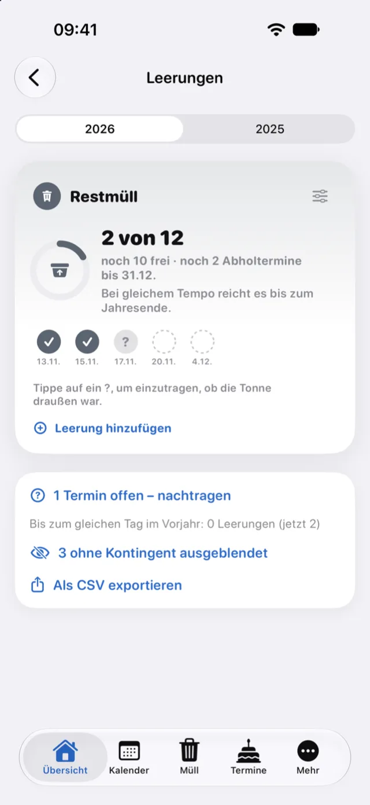

Ein Wunsch aus der Community
Leerungs-Statistik.
Wie oft war welche Tonne draußen? Und wie viele Leerungen sind noch frei? Für alle, deren Gebühr nur eine bestimmte Zahl an Leerungen im Jahr enthält.
- Abhaken, was rausging. „Erledigt“ zählt als Leerung. Vergessene Termine trägst du mit „Raus“ oder „Nicht raus“ nach.
- Freie Leerungen im Blick. Trag ein, wie viele Leerungen inklusive sind, etwa 12 im Jahr. Bei jedem Abholtermin steht dann „noch 10 frei“.
- Reicht es bis Jahresende? Die App rechnet mit deinem Tempo und vergleicht mit dem Vorjahr bis zum gleichen Tag.
- Nur, was zählt. Kein Kontingent fürs Schadstoffmobil? Ein Tipp auf „Kein Kontingent“, und die Müllart verschwindet aus der Statistik.
- Dein Gebührenjahr. Eigener Stichtag, Preis je Zusatzleerung, Export als CSV.
